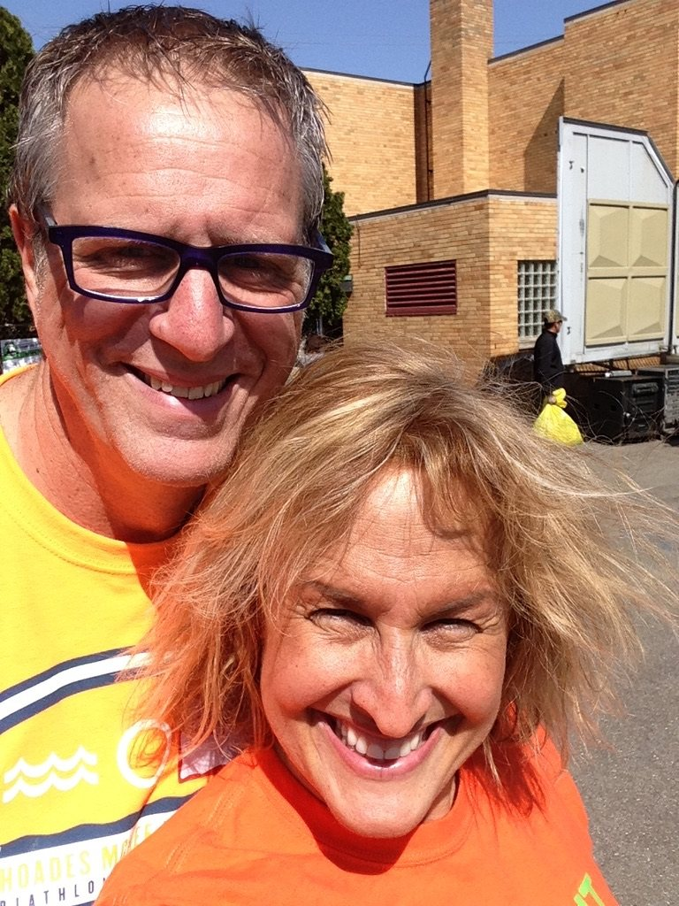
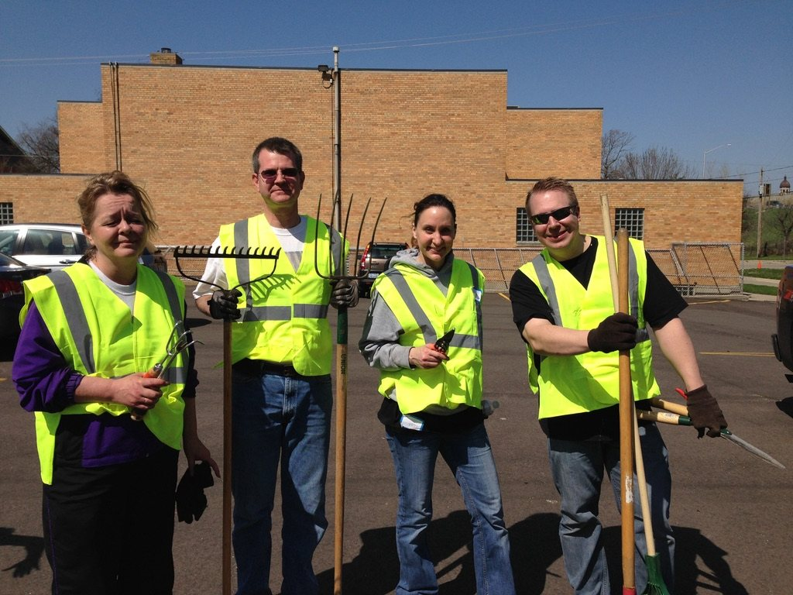

West Grand Neighborhood Organization
Neighborhood association serving the West Grand area
Give on their siteSince the first Airbnb booking in 2014, a quarter of what the Loft earned has gone to the neighborhood. This is where it went, and where Brian and Erica put their time.
of every stay, from the first booking in September 2014, gifted to neighborhood nonprofits. The first three were Well House, Steepletown Neighborhood Services and the HQ drop-in center for runaway and homeless youth.
All funds from the 2026 estate sale go to support the City Wide Clean Up, the West Side Community Clean Up we founded in 2009. Want to give where they gave? Support these organizations.
It began with two people dating, walking the block with trash bags. It grew into an annual spring Saturday with 200+ volunteers, now carried on by the West Grand Neighborhood Organization as the City Wide Clean Up.





All estate sale funds go to support the City Wide Clean Up (aka the West Side Community Clean Up we founded in 2009), and these are organizations Brian and Erica have supported from the Loft. If this place or these two people meant something to you, a gift to any of them is the best thank-you we can think of.
In 2009, while we were dating, we started picking up trash on our block around Union Square and invited friends to join us. It became an annual spring Saturday with 200+ volunteers, now carried on by the West Grand Neighborhood Organization. Today it's the City Wide Clean Up, aka the West Side Community Clean Up, and all funds from our estate sale go to support it, to fund a community service project next spring that brings the neighborhood's next generation together. Watch for the invitation; we'll be back for it.
Give to the Clean Up
From the first Airbnb booking in 2014, 25 percent of what the Loft earned went to organizations like these. If this place mattered to you, please support one of them: give, volunteer, or just tell a friend.
Neighborhood association serving the West Grand area
Give on their siteWest Side education, job skills and community support
Give on their siteWest Side youth and family ministry
Give on their siteWest Side youth, families and economic support, on Sibley St NW
Give on their siteEmergency food for northwest side families, on Davis Ave NW
Give on their siteDay center for neighbors experiencing homelessness, moving to Leonard St NW
After-school program with daily music classes, on Alpine Ave NW
Give on their siteCommunity school coordinators at Union High and West Side schools
Give on their siteFunds opportunity and support for GRPS students
GiveWebsiteCulture, language and support for Native students in Grand Rapids schools; give through the GRPS Foundation and designate the program
Give on their siteAfter-school clubs and programs for Grand Rapids youth
Give on their siteDrop-in center and housing for youth facing homelessness
Give on their siteDrop-in center for youth ages 14 to 24 without stable housing
Give on their siteMentoring that keeps young women on a positive path
GiveWebsiteAdult and family literacy programs across West Michigan
Give on their site264 acres of forest, fields and farm on the West Side, getting kids and families outdoors
Give on their siteSummer camp and year-round programs for kids
GiveWebsiteEnds homelessness with affordable, long-term housing
GiveWebsiteMichigan's oldest nonprofit affordable housing provider, since 1974
Give on their siteShelter and services for abused women and children
Give on their siteFree medical care for uninsured West Side neighbors, on Leonard St NW
Give on their siteSupport for people facing breast cancer and their families
Free and low-cost play-based therapy and workshops
Give on their siteGrants life-changing wishes for children with critical illnesses
Give on their siteFunding blood cancer research and patient support
Give on their siteBiomedical research and science education in Grand Rapids
Give on their siteTrains assistance dogs for people with disabilities
Give on their siteDisability arts organization behind the DisArt Festival
Give on their siteRestorative art and youth education for liberation
GiveWebsiteGrand Rapids community media, where we wrote our first homesharing op-ed
Give on their siteHelps refugees become full participants in West Michigan
Give on their siteConnects with and invests in New American women leaders
Give on their siteSupport, search help and advocacy for adoptees and families
Give on their siteCommunity foundation funding Kent County nonprofits
Give on their site